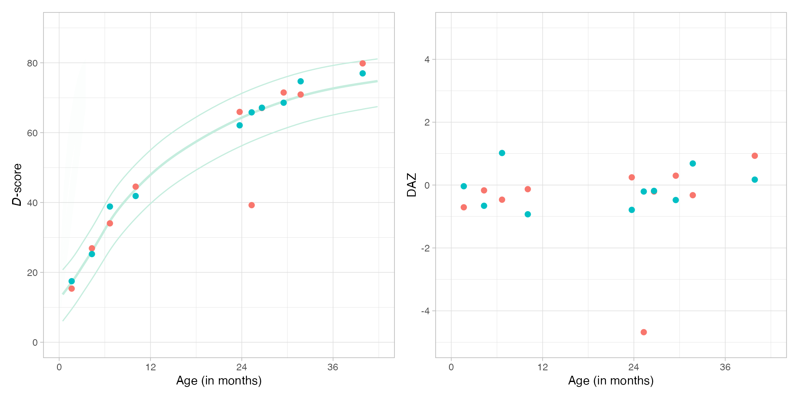

Suppose you have administered GSED SF, GSED LF (McCray et al. 2023) or GSED HF to one or more children. The next step is calculating each child’s developmental score (D-score) and age-adjusted equivalent (DAZ). This step is known as scoring. The present section provides recipes for calculating the D-score and DAZ. We may pick one of the following two methods:
R. The app contains online documentation and instructions
and will not be further discussed here.R package dscore. The R
package dscore at https://CRAN.R-project.org/package=dscore is a flexible
option with all the tools needed to calculate the D-score. It is an
excellent choice for users familiar with R and users who
like to incorporate D-score calculations into a workflow.R language. If you are new to R
consult the R for Data Science
book by Hadley Wickham and Garrett Grolemund;R package dscore
on your local machine;data.frame, a
standard R tabular structure;dscore() function to calculate the
D-score and DAZ. The function returns a table with six columns with the
estimates with the same number of rows as your data.dscore package
The dscore package contains tools to
The required input consists of item level responses on milestones collected using instruments for measuring child development, including the GSED LF, GSED SF and GSED HF.
There are two versions of the dscore package. For daily
use, we recommend the curated and published version on CRAN. In
R, install the dscore package as
install.packages("dscore")In some cases, you might need a more recent version that includes extensions and bug fixes not yet available on CRAN. You can install the development version from GitHub by:
install.packages("remotes")
remotes::install_github("d-score/dscore")The development version requires a local C++ compiler for building the package from source.
The dscore() function accepts item names that follow the
GSED 9-position schema. A name with a length of nine characters
identifies every milestone. The following table shows the construction
of names.
| Position | Description | Example |
|---|---|---|
| 1-3 | instrument | by3 |
| 4-5 | developmental domain | cg |
| 6 | administration mode | d |
| 7-9 | item number | 018 |
Thus, item by3cgd018 refers to the 18th item in the
cognitive scale of the Bayley-III. The label of the item can be obtained
by
library(dscore)
get_labels("by3cgd018")## by3cgd018
## "Inspects own hand"The dscore package maintains a list of items names.
Rows: One measurement, i.e., one test administration for a child at a given age, occupies a row in the data set. Thus, if a child is measured three times at different ages, there will be three rows for that child in the dataset.
Columns: There should be at least two columns in the data set:
1, a FAIL as 0. If
there is no answer or if the item was not administered use the missing
value code NA. Items that are never administered may be
coded as all NA or deleted.The dataset may contain additional columns, e.g., the child number or health information. These are ignored by the D-score calculation.
The most important steps is preparing the data for the D-score calculations are:
0, 1 or
NA
The table below lists the five available GSED instruments:
| Instrument name | Instrument code | Length | Status |
|---|---|---|---|
GSED SF V1 |
gs1 |
139 | Active |
GSED LF V1 |
gl1 |
155 | Active |
GSED HF V1 |
gh1 |
55 | Active |
GSED SF V0 |
gpa |
139 | Retired |
GSED LF V0 |
gto |
155 | Retired |
Select the section corresponding to your instrument for further instructions.
GSED SF V1
The GSED SF V1 instrument contains 139 items and has
instrument code gs1.
Obtain the full list of item name for as
instrument <- "gs1"
items <- get_itemnames(instrument = instrument, order = "indm")
length(items)## [1] 139
head(items)## [1] "gs1sec001" "gs1moc002" "gs1sec003" "gs1lgc004" "gs1moc005" "gs1cgc006"The order argument is needed to sort items according to
sequence number 1 to 139. Check that you have the correct version by
comparing the labels of the first few items as:
labels <- get_labels(items)
head(cbind(items, substr(labels, 1, 50)))## items
## gs1sec001 "gs1sec001" "Does your child smile?"
## gs1moc002 "gs1moc002" "When lying on his/her back, does your child move h"
## gs1sec003 "gs1sec003" "Does your child look at your face when you speak t"
## gs1lgc004 "gs1lgc004" "Does your child cry when he/she is hungry, wet, ti"
## gs1moc005 "gs1moc005" "Does your child grasp your finger if you touch her"
## gs1cgc006 "gs1cgc006" "Does your child look at and focus on objects in fr"Suppose that you stored your data with items names sf001
to sf139. For example,
## subjid agedays sf099 sf100 sf101 sf102 sf103
## 1 1 811 1 1 1 1 1
## 2 2 898 1 1 1 1 1
## 3 3 203 NA NA NA NA NA
## 4 4 966 NA NA NA 1 NA
## 5 8 770 1 1 1 0 1
## 6 9 306 NA NA NA NA NAMake sure that the items are in the correct order. Rename the columns with gsed 9-position item names.
## subjid agedays gs1lgc099 gs1lgc100 gs1moc101 gs1sec102 gs1lic103
## 1 1 811 1 1 1 1 1
## 2 2 898 1 1 1 1 1
## 3 3 203 NA NA NA NA NA
## 4 4 966 NA NA NA 1 NA
## 5 8 770 1 1 1 0 1
## 6 9 306 NA NA NA NA NAThe data in sf are now ready for the
dscore() function.
Once the data are in proper shape, calculation of the D-score is
straightforward. The sf dataset has properly named columns
that identify each item.
## a n p d sem daz
## 1 2.2204 29 0.7586 67.14 1.800564 -0.185
## 2 2.4586 39 0.6923 68.57 1.552064 -0.476
## 3 0.5558 49 0.6531 38.85 1.670395 1.020
## 4 2.6448 36 0.7500 74.70 1.641886 0.686
## 5 2.1081 50 0.5000 65.81 1.367646 -0.205
## 6 0.8378 49 0.6939 41.87 1.723344 -0.929The table below provides the interpretation of the output:
| Name | Interpretation |
|---|---|
a |
Decimal age in years |
n |
Number of items used to calculate the D-score |
p |
Proportion of passed milestones |
d |
D-score (posterior mean) |
sem |
Standard error of measurement (posterior standard deviation) |
daz |
D-score corrected for age |
The number of rows of result is equal to the number of
rows of sf. We save the result for later processing.
sf2 <- data.frame(sf, results)It is possible to calculate D-score for item subsets by setting the
items argument. We do not advertise this option for
practical application, but suppose we are interested in the D-score
based on items from gs1 and gl1 for domains
mo or gm (motor) only. The “motor” D-score can
be calculated as follows:
items_motor <- get_itemnames(instrument = c("gs1", "gl1"), domain = c("mo", "gm"))
results <- dscore(sf, items = items_motor, xname = "agedays", xunit = "days")
head(results)## a n p d sem daz
## 1 2.2204 6 0.8333 67.69 3.559666 -0.038
## 2 2.4586 8 0.7500 69.18 3.211214 -0.318
## 3 0.5558 30 0.7333 40.04 2.018110 1.394
## 4 2.6448 5 0.8000 75.45 3.341612 0.891
## 5 2.1081 10 0.7000 69.19 2.935576 0.722
## 6 0.8378 31 0.7419 42.58 2.078539 -0.722GSED LF V1
The GSED LF V1 instrument contains 155 items and has
instrument code gl1.
Obtain the full list of item name for as
instrument <- "gl1"
items <- get_itemnames(instrument = instrument)
length(items)## [1] 155
head(items)## [1] "gl1fmd001" "gl1fmd002" "gl1fmd003" "gl1fmd004" "gl1fmd005" "gl1fmd006"Reorder item names so that they corresponds to streams A, B and C, respectively.
## [1] "gl1gmd001" "gl1gmd002" "gl1gmd003" "gl1gmd004" "gl1gmd005" "gl1gmd006"Check that you have the correct version by comparing the labels of the first few items as:
labels <- get_labels(items)
head(cbind(items, substr(labels, 1, 50)))## items
## gl1gmd001 "gl1gmd001" "Moves body in reaction to caregiver"
## gl1gmd002 "gl1gmd002" "Moves body, kicking legs and moving arms equally o"
## gl1gmd003 "gl1gmd003" "Pulls to sit - no head lag"
## gl1gmd004 "gl1gmd004" "Lifts head in prone 45 degrees"
## gl1gmd005 "gl1gmd005" "Lifts head, shoulders, chest when prone (2X)"
## gl1gmd006 "gl1gmd006" "Puts hands together in front of face"Suppose that you stored your data with items names lf001
to lf155. For example,
## subjid agedays lf058 lf059 lf060 lf061 lf062
## 1 1 811 NA NA NA NA NA
## 2 2 898 NA NA NA NA NA
## 3 3 203 0 0 0 NA NA
## 4 4 966 NA NA NA NA NA
## 5 8 770 0 0 0 0 0
## 6 9 306 1 1 0 1 0Make sure that the items are in the correct order. Rename the columns with gsed 9-position item names.
## subjid agedays gl1lgd009 gl1lgd010 gl1lgd011 gl1lgd012 gl1lgd013
## 1 1 811 NA NA NA NA NA
## 2 2 898 NA NA NA NA NA
## 3 3 203 0 0 0 NA NA
## 4 4 966 NA NA NA NA NA
## 5 8 770 0 0 0 0 0
## 6 9 306 1 1 0 1 0The data in lf are now ready for the
dscore() function.
Once the data are in proper shape, calculation of the D-score is
straightforward. The lf dataset has properly named columns
that identify each item.
## a n p d sem daz
## 1 2.2204 45 0.5556 67.06 1.412549 -0.206
## 2 2.4586 53 0.6226 71.49 1.361023 0.298
## 3 0.5558 34 0.5588 34.04 1.704546 -0.465
## 4 2.6448 54 0.5185 70.92 1.291551 -0.322
## 5 2.1081 58 0.1724 39.25 1.896424 -4.679
## 6 0.8378 32 0.5625 44.55 1.663876 -0.130The table below provides the interpretation of the output:
| Name | Interpretation |
|---|---|
a |
Decimal age in years |
n |
Number of items used to calculate the D-score |
p |
Proportion of passed milestones |
d |
D-score (posterior mean) |
sem |
Standard error of measurement (posterior standard deviation) |
daz |
D-score corrected for age |
The number of rows of result is equal to the number of
rows of lf. We save the result for later processing.
lf2 <- data.frame(lf, results)It is possible to calculate D-score for item subsets by setting the
items argument. We do not advertise this option for
practical application, but suppose we are interested in the D-score
based on items from gs1 and gl1 for domains
mo or gm (motor) only. The “motor” D-score can
be calculated as follows:
items_motor <- get_itemnames(instrument = c("gs1", "gl1"), domain = c("mo", "gm"))
results <- dscore(lf, items = items_motor, xname = "agedays", xunit = "days")
head(results)## a n p d sem daz
## 1 2.2204 12 0.5833 65.41 3.046474 -0.637
## 2 2.4586 18 0.6111 70.97 2.418469 0.157
## 3 0.5558 19 0.6842 36.21 2.182034 0.194
## 4 2.6448 12 0.4167 65.93 2.849341 -1.523
## 5 2.1081 12 0.5000 60.73 3.066503 -1.479
## 6 0.8378 14 0.7143 45.07 2.487767 0.030GSED HF V1
The GSED HF V1 instrument contains 55 items and has
instrument code gh1.
Obtain the full list of item name for as
instrument <- "gh1"
items <- get_itemnames(instrument = instrument, order = "indm")
length(items)## [1] 55
head(items)## [1] "gh1sec001" "gh1sec002" "gh1lgc003" "gh1cgc004" "gh1moc005" "gh1sec006"The order argument is needed to sort items according to
sequence number 1 to 55. Check that you have the correct version by
comparing the labels of the first few items as:
labels <- get_labels(items)
head(cbind(items, substr(labels, 1, 50)))## items
## gh1sec001 "gh1sec001" "Does your child smile?"
## gh1sec002 "gh1sec002" "Does your child look at your face when you speak t"
## gh1lgc003 "gh1lgc003" "Does your child cry when he/she is hungry, wet, ti"
## gh1cgc004 "gh1cgc004" "Does your child look at and focus on objects in fr"
## gh1moc005 "gh1moc005" "Does your child bring his/her hand to his/her mout"
## gh1sec006 "gh1sec006" "Does your child smile when you smile or talk with "Suppose that you stored your data with items names hf001
to hf055. For example,
## subjid agedays hf028 hf029 hf030 hf031 hf032 hf033
## 1 1 811 NA NA NA NA NA NA
## 2 2 898 NA NA NA NA NA NA
## 3 3 203 1 1 0 1 0 0
## 4 4 966 NA NA NA NA NA NA
## 5 8 770 NA NA NA NA NA NA
## 6 9 306 1 1 1 1 1 1Make sure that the items are in the correct order. Rename the columns with gsed 9-position item names.
## subjid agedays gh1cgc028 gh1moc029 gh1lic030 gh1moc031 gh1moc032 gh1moc033
## 1 1 811 NA NA NA NA NA NA
## 2 2 898 NA NA NA NA NA NA
## 3 3 203 1 1 0 1 0 0
## 4 4 966 NA NA NA NA NA NA
## 5 8 770 NA NA NA NA NA NA
## 6 9 306 1 1 1 1 1 1The data in hf are now ready for the
dscore() function.
Once the data are in proper shape, calculation of the D-score is
straightforward. The hf dataset has properly named columns
that identify each item.
## a n p d sem daz
## 1 2.2204 8 0.7500 66.46 3.099626 -0.365
## 2 2.4586 8 1.0000 73.55 3.959115 0.862
## 3 0.5558 29 0.6207 37.36 2.190590 0.552
## 4 2.6448 3 1.0000 74.12 4.231796 0.528
## 5 2.1081 7 1.0000 70.72 3.841959 1.149
## 6 0.8378 30 0.7000 42.55 2.182150 -0.731The table below provides the interpretation of the output:
| Name | Interpretation |
|---|---|
a |
Decimal age in years |
n |
Number of items used to calculate the D-score |
p |
Proportion of passed milestones |
d |
D-score (posterior mean) |
sem |
Standard error of measurement (posterior standard deviation) |
daz |
D-score corrected for age |
The number of rows of results is equal to the number of
rows of hf. We save the result for later processing.
hf2 <- data.frame(hf, results)It is possible to calculate D-score for item subsets by setting the
items argument. We do not advertise this option for
practical application, but suppose we are interested in the D-score
based on items from gs1, gl1 and
gh1 for domains mo or gm (motor)
only. The “motor” D-score can be calculated as follows:
items_motor <- get_itemnames(instrument = c("gs1", "gl1", "gh1"), domain = c("mo", "gm"))
results <- dscore(hf, items = items_motor, xname = "agedays", xunit = "days")
head(results)## a n p d sem daz
## 1 2.2204 1 1.0000 69.63 4.504147 0.491
## 2 2.4586 1 1.0000 71.52 4.583980 0.306
## 3 0.5558 18 0.5000 36.65 2.506216 0.331
## 4 2.6448 1 1.0000 72.86 4.642396 0.189
## 5 2.1081 1 1.0000 68.67 4.467450 0.577
## 6 0.8378 18 0.6111 42.29 2.508751 -0.807GSED SF V0
The GSED SF V0 instrument contains 139 items and has
instrument code gpa.
Obtain the full list of item name for as
instrument <- "gpa"
items <- get_itemnames(instrument = instrument, order = "indm")
length(items)## [1] 139
head(items)## [1] "gpalac001" "gpacgc002" "gpafmc003" "gpasec004" "gpamoc005" "gpamoc006"The order argument is needed to sort items according to
sequence number 1 to 139. Check that you have the correct version by
comparing the labels of the first few items as:
labels <- get_labels(items)
head(cbind(items, substr(labels, 1, 50)))## items
## gpalac001 "gpalac001" "Does your child cry when he/she is hungry, wet, ti"
## gpacgc002 "gpacgc002" "Does your child look at and focus on objects in fr"
## gpafmc003 "gpafmc003" "Does your child grasp your finger if you touch her"
## gpasec004 "gpasec004" "Does your child smile?"
## gpamoc005 "gpamoc005" "Does your child try to move his/her head (or eyes)"
## gpamoc006 "gpamoc006" "When lying on his/her back, does your child move h"Suppose that you stored your data with items names sf001
to sf139. For example,
## subjid agedays sf099 sf100 sf101 sf102 sf103
## 1 1 811 1 1 1 1 1
## 2 2 898 1 1 1 1 1
## 3 3 203 NA NA NA NA NA
## 4 4 966 NA NA NA 1 NA
## 5 8 770 1 1 1 0 1
## 6 9 306 NA NA NA NA NAMake sure that the items are in the correct order. Rename the columns with gsed 9-position item names.
## subjid agedays gpalgc099 gpaclc100 gpaclc101 gpalgc102 gpamoc103
## 1 1 811 1 1 1 1 1
## 2 2 898 1 1 1 1 1
## 3 3 203 NA NA NA NA NA
## 4 4 966 NA NA NA 1 NA
## 5 8 770 1 1 1 0 1
## 6 9 306 NA NA NA NA NAThe data in sf are now ready for the
dscore() function.
Once the data are in proper shape, calculation of the D-score is
straightforward. The sf dataset has properly named columns
that identify each item.
## a n p d sem daz
## 1 2.2204 29 0.7586 67.53 1.846355 -0.081
## 2 2.4586 39 0.6923 69.51 1.620815 -0.232
## 3 0.5558 50 0.6600 39.05 1.710319 1.083
## 4 2.6448 36 0.7500 74.68 1.656658 0.681
## 5 2.1081 50 0.5000 65.80 1.389134 -0.207
## 6 0.8378 50 0.7000 42.03 1.768821 -0.883The table below provides the interpretation of the output:
| Name | Interpretation |
|---|---|
a |
Decimal age in years |
n |
Number of items used to calculate the D-score |
p |
Proportion of passed milestones |
d |
D-score (posterior mean) |
sem |
Standard error of measurement (posterior standard deviation) |
daz |
D-score corrected for age |
The number of rows of result is equal to the number of
rows of sf. We save the result for later processing.
sf3 <- data.frame(sf, results)It is possible to calculate D-score for item subsets by setting the
items argument. We do not advertise this option for
practical application, but suppose we are interested in the D-score
based on items from gpa and gto for domains
mo or gm (motor) only. The “motor” D-score can
be calculated as follows:
items_motor <- get_itemnames(instrument = c("gpa", "gto"), domain = c("mo", "gm"))
results <- dscore(sf, items = items_motor, xname = "agedays", xunit = "days")
head(results)## a n p d sem daz
## 1 2.2204 5 1.0000 72.44 3.795312 1.269
## 2 2.4586 5 1.0000 73.81 3.946724 0.934
## 3 0.5558 33 0.5758 38.47 1.940250 0.901
## 4 2.6448 6 0.6667 73.15 3.305113 0.267
## 5 2.1081 8 0.7500 71.93 3.058227 1.485
## 6 0.8378 32 0.6250 41.60 2.022400 -1.006GSED LF V0
The GSED LF V0 instrument contains 155 items and has
instrument code gto.
Obtain the full list of item name for as
instrument <- "gto"
items <- get_itemnames(instrument = instrument)
length(items)## [1] 155
head(items)## [1] "gtofmd001" "gtofmd002" "gtofmd003" "gtofmd004" "gtofmd005" "gtofmd006"Reorder item names so that they corresponds to streams A, B and C, respectively.
## [1] "gtogmd001" "gtogmd002" "gtogmd003" "gtogmd004" "gtogmd005" "gtogmd006"Check that you have the correct version by comparing the labels of the first few items as:
labels <- get_labels(items)
head(cbind(items, substr(labels, 1, 50)))## items
## gtogmd001 "gtogmd001" "A1. Lifts head in prone 45 degrees"
## gtogmd002 "gtogmd002" "A2. Frolics alone - moving body, kicking legs"
## gtogmd003 "gtogmd003" "A3. Frolics with mother or caregiver responsively"
## gtogmd004 "gtogmd004" "A4. Hands together in front of face"
## gtogmd005 "gtogmd005" "A5. Balances head well while suppported"
## gtogmd006 "gtogmd006" "A6. Pulls to sit - no head lag"Suppose that you stored your data with items names lf001
to lf155. For example,
## subjid agedays lf058 lf059 lf060 lf061 lf062
## 1 1 811 NA NA NA NA NA
## 2 2 898 NA NA NA NA NA
## 3 3 203 0 0 0 NA NA
## 4 4 966 NA NA NA NA NA
## 5 8 770 0 0 0 0 0
## 6 9 306 1 1 0 1 0Make sure that the items are in the correct order. Rename the columns with gsed 9-position item names.
## subjid agedays gtolgd009 gtolgd010 gtolgd011 gtolgd012 gtolgd013
## 1 1 811 NA NA NA NA NA
## 2 2 898 NA NA NA NA NA
## 3 3 203 0 0 0 NA NA
## 4 4 966 NA NA NA NA NA
## 5 8 770 0 0 0 0 0
## 6 9 306 1 1 0 1 0The data in lf are now ready for the
dscore() function.
Once the data are in proper shape, calculation of the D-score is
straightforward. The lf dataset has properly named columns
that identify each item.
## a n p d sem daz
## 1 2.2204 45 0.5556 67.05 1.446135 -0.209
## 2 2.4586 53 0.6226 71.43 1.383643 0.282
## 3 0.5558 34 0.5588 34.27 1.711715 -0.397
## 4 2.6448 54 0.5185 70.79 1.318900 -0.355
## 5 2.1081 58 0.1724 39.27 1.894231 -4.678
## 6 0.8378 32 0.5625 44.84 1.712872 -0.041The table below provides the interpretation of the output:
| Name | Interpretation |
|---|---|
a |
Decimal age in years |
n |
Number of items used to calculate the D-score |
p |
Proportion of passed milestones |
d |
D-score (posterior mean) |
sem |
Standard error of measurement (posterior standard deviation) |
daz |
D-score corrected for age |
The number of rows of result is equal to the number of
rows of lf. We save the result for later processing.
lf3 <- data.frame(lf, results)It is possible to calculate D-score for item subsets by setting the
items argument. We do not advertise this option for
practical application, but suppose we are interested in the D-score
based on items from gpa and gto for domains
mo or gm (motor) only. The “motor” D-score can
be calculated as follows:
items_motor <- get_itemnames(instrument = c("gpa", "gto"), domain = c("mo", "gm"))
results <- dscore(lf, items = items_motor, xname = "agedays", xunit = "days")
head(results)## a n p d sem daz
## 1 2.2204 12 0.5833 65.55 3.075622 -0.601
## 2 2.4586 18 0.6111 70.97 2.418469 0.157
## 3 0.5558 19 0.6842 36.20 2.172205 0.191
## 4 2.6448 12 0.4167 66.04 2.887817 -1.499
## 5 2.1081 12 0.5000 60.73 3.067461 -1.479
## 6 0.8378 14 0.7143 44.96 2.552111 -0.004We used the GSED Phase I data to calculate age-conditional reference scores for the D-score. The references are based on about 12,000 administration of the GSED SF and GSED LF from Bangladesh, Pakistan and Tanzania. Extract the references as
library(dplyr, warn.conflicts = FALSE, quietly = TRUE)
ref <- builtin_references |>
filter(population == "phase1") |>
select(population, age, mu, sigma, nu, tau, SDM2, SD0, SDP2)
head(ref)## population age mu sigma nu tau SDM2 SD0 SDP2
## 1 phase1 0.0383 13.68 0.2456 1.1731 15.422 6.042690 13.68707 20.71620
## 2 phase1 0.0575 14.36 0.2324 1.2062 15.540 6.699401 14.36568 21.30880
## 3 phase1 0.0767 15.02 0.2206 1.2375 15.652 7.354450 15.02457 21.88555
## 4 phase1 0.0958 15.68 0.2100 1.2670 15.758 8.014796 15.68368 22.47481
## 5 phase1 0.1150 16.35 0.2005 1.2951 15.860 8.680976 16.35299 23.09062
## 6 phase1 0.1342 17.03 0.1917 1.3218 15.957 9.363085 17.03241 23.72268The columns mu, sigma, nu and
tau are the age-varying parameters of a Box-Cox \(t\) (BCT) distribution.
The script below creates a figure with -2SD, 0SD and +2SD centiles
plus 20 D-scores (10 LF and 10 SF) for the lf2 and
sf2 data.
library(ggplot2)
library(patchwork)
r <- builtin_references |>
filter(population == "phase1" & age <= 3.5) |>
mutate(m = age * 12)
lf2$ins <- "lf"
lf2$m <- lf2$a * 12
sf2$ins <- "sf"
sf2$m <- sf2$a * 12
data <- bind_rows(lf2, sf2)
g1 <- ggplot(data, aes(x = m, y = d, group = ins, color = ins)) +
theme_light() +
annotate("polygon",
x = c(r$age, rev(r$age)),
y = c(r$SDM2, rev(r$SDP2)), alpha = 0.06, fill = "#C5EDDE"
) +
annotate("line", x = r$m, y = r$SDM2, lwd = 0.5, color = "#C5EDDE") +
annotate("line", x = r$m, y = r$SDP2, lwd = 0.5, color = "#C5EDDE") +
annotate("line", x = r$m, y = r$SD0, lwd = 1, color = "#C5EDDE") +
scale_x_continuous("Age (in months)",
limits = c(0, 42),
breaks = seq(0, 42, 12)
) +
scale_y_continuous(
expression(paste(italic(D), "-score", sep = "")),
breaks = seq(0, 80, 20),
limits = c(0, 90)
) +
geom_point(size = 2) +
theme(legend.position = "none")
g2 <- ggplot(data, aes(x = m, y = daz, group = ins, color = ins)) +
theme_light() +
scale_x_continuous("Age (in months)",
limits = c(0, 42),
breaks = seq(0, 42, 12)
) +
scale_y_continuous(
"DAZ",
breaks = seq(-4, 4, 2),
limits = c(-5, 5)
) +
geom_point(size = 2) +
theme(legend.position = "none")
g1 + g2